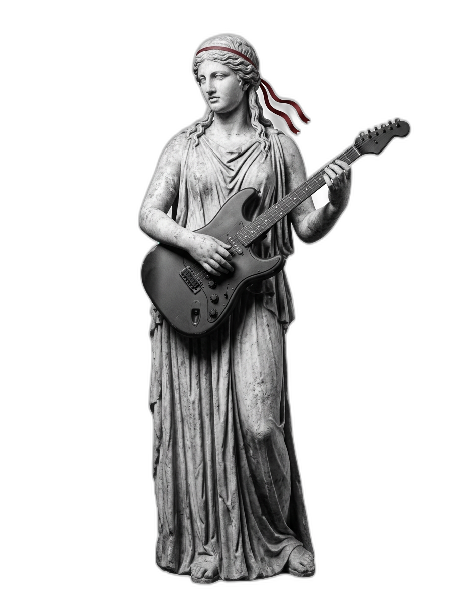

Notre signature
Transformer une marque en expérience culturelle. Élever le commercial au rang de l'artistique. Un processus unique, développé par Initium.

Le concept
L'artification est le processus par lequel un objet, une pratique ou une marque acquiert une dimension artistique. Chez Initium, nous appliquons ce principe à chaque aspect de l'identité et de la communication de nos clients. Le résultat : des marques qui ne se contentent pas d'exister sur un marché — elles l'élèvent.
Le processus
Nous plongeons dans l'univers de votre marque, son histoire, son contexte culturel. Nous identifions les codes artistiques et patrimoniaux qui résonnent avec votre identité.
De cette immersion naît un récit. Nous structurons l'histoire de votre marque autour de thèmes forts, de métaphores visuelles et de codes culturels identifiés.
Chaque élément de votre identité est conçu comme une pièce artistique intentionnelle : logo, palette, typographie, imagerie, ton de voix — tout participe à l'oeuvre.
L'artification prend vie à travers chaque point de contact : digital, print, expérientiel. La cohérence est totale, l'impact est culturel.
Discutons de la manière dont nous pouvons transformer votre identité.
Prendre rendez-vous